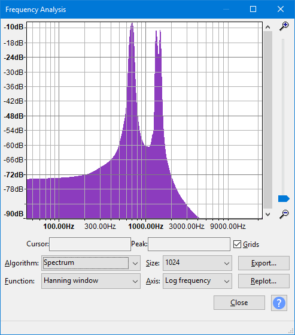

Plot Spectrum
- Accessed by:
- 
Plots are made using a mathematical algorithm known as a Fast Fourier Transform or FFT. This gives a value for each narrow band of frequencies that represents how much of those frequencies is present. All the values are then interpolated to create the graph.
Plot Spectrum take the audio in blocks of 'Size' samples, does the FFT, and averages all the blocks together.
Algorithm
Determines what type of processing is done on the audio data.
- Spectrum: (default) - Plots the FFT of the data as described above.
- Autocorrelation: These options measure to what extent the sound repeats itself. This is done by taking two copies of the audio, and moving one forward by one sample. The two copies are then multiplied together, and all the values added up. This is repeated for two samples difference and so on, up to the number of samples in the size option. This gives a small result if the waveform is random (for example, noise) and a large result if it is repetitive (like a musical note). By looking at the peaks in the plot, the key frequencies present can be determined even if there is a lot of noise.
- Cepstrum: The cepstrum of an audio signal is related to the spectrum, but presents the rate of change in the different spectrum bands. It's particularly useful for properties of vocal tracks and is used, for example, in software to identify speakers by their voice characteristics.
Size
This controls how many frequency divisions are used for the spectrum, or how many samples are used for autocorrelation. In Spectrum, a larger size gives more accurate frequency resolution (narrow bands), but averages the result over a longer period of time (because more samples are needed for the calculation). In Autocorrelation, a larger size looks for repeating patterns over a larger range of time offsets, and so will detect lower frequency patterns. With either algorithm, Audacity will show a warning if the selected region is too short for the chosen size.
Function
Function offers choices like Rectangular, Hanning, Hamming and others. We suggest you use the default Hanning (actually it is a Hann window, but Hanning is widely accepted) for most situations. The fundamental principle at work here is that the way we observe our data changes what we see. The "true spectrum" of your project would be computed over the entire project and would provide very detailed frequency resolution but essentially no time resolution at all. In other words, this "true spectrum" would offer an average frequency distribution over the entire project. If we select a short interval of audio, the short-time spectrum has frequency resolution limited by the observation window time AND the result is affected by the spectrum of the window itself. For general audio analysis, the Rectangular window is least desirable, and the other options offer slightly different effects.
- Currently, only the first 10485760 samples (237.8 seconds at 44100 Hz sample rate) of selected audio can be analyzed.
- The spectrum analysis shows the sum of all selected channels, so shows the sum of left and right channels in a stereo track. If there are two selected channels with identical audio, the same peak will be 6 dB higher than if one channel was selected.
Axis
When using the Spectrum, the frequencies can be displayed on a logarithmic scale (default)or a linear scale. The default log scale gives greater display width to low and mid-range frequencies with "mid range" frequencies occurring close to the middle of the graph. Linear view (which gives equal width to each "Hz" increment on the scale), can be useful to show high harmonics (a component frequency of the sound that is a whole number multiple of the fundamental frequency) or other very high frequency content.
Zooming
To the right of the spectrum are two sliders to control zooming of the spectrum plot:
- The zoom slider on the far right with the magnifying glass icons. Move this up to increase the vertical magnification of the plotted spectrum and down again to reduce it.
- The scroll bar, to the left of the zoom slider. At default normal zoom this fills the slider and is inoperable but as you increase the vertical magnification the scrollbar shrinks and can be moved up and down to show different parts of the magnified spectrum plot.
Buttons
- Exports the spectrum to a text file. You could open this text file in another application for further analysis. Note that if you export again to the same file, the new spectrum will be appended underneath the previous one.
- Allows you to replot the spectrum when the selection changes.
- Closes the Frequency Analysis window and saves its current settings. If you then open a new project and open an analysis window in that project, the settings saved by the last closed analysis window will be used.
-
 Links to this "Plot Spectrum" page.
Links to this "Plot Spectrum" page.
Grids (checkbox)
Turns the measurement grids on and off.